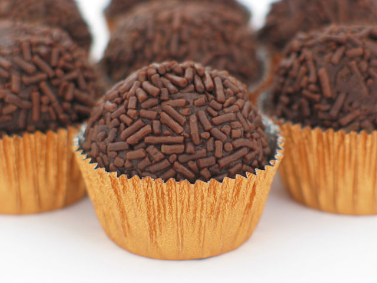

/// MENU ///
Brigadeiro (Brazilian Fudge Balls)

DESCRIPTION:
------------------------------------------------------------------------------------------------------------------------------------------------------
PREPARATION TIME : 15 min + 2 hours cooling (optional)  | SERVES: 16 (Brigadeiros)
| SERVES: 16 (Brigadeiros) 
------------------------------------------------------------------------------------------------------------------------------------------------------
Brigadeiro (bree-gah-day-ro) is one of the most classic Brazilian desserts. So classic
and so Brazilian, it's safe to say it's part of the Brazilian DNA. True facts!
These little chocolate caramels are possibly THE most know, most popular and most loved Brazilian party treat.
Ask any Brazilian and they'll confirm... Brigadeiros
are like a Brazilian chocolaty treasure, so sweet and so gooevy,
it's impossible not to love.
This simple dessert is made with just a handful of ingredients, mainly condensed milk
and chocolate powder - you know, the kind you add to milk like Nesquik, or Nescau,
widely used in Brazil. You can defintely make brigadeiro with cocoa powder too, but there's a slightly different process and
recipe for it, especially when we want to roll it into little balls.
------------------------------------------------------------------------------------------------------------------------------------------------------
Ingredients
- 1x 14oz can of sweet condensed milk
- 1/2 cup chocolate powder, such as Nescau or Nesquik
- 1 Tbsp margarine or butter (plus more for hands)
- Sprinkles
------------------------------------------------------------------------------------------------------------------------------------------------------
Instructions
-
Add the condensed milk, the butter, and the chocolate powder to a medium saucepan and stir.
-
Cook over medium heat, for approximately 10 minutes, stirring repeatedly and scraping the sides and scraping the sides
and the bottom of the pan with a spatula to avoid burning.
-
The Brigadeiro is ready when you scrape the bottom of the pan, and the brigadeiro takes 2-3 seconds to come back
to its place, or when the mixture reaches 205F-208F – You can use a candy thermometer, or just a regular food
thermometer to check.
-
Pour the hot brigadeiro into a dish or a plate, and let it cool – about 2 hours.
-
Meanwhile, pour sprinkles in a deep plate or bowl.
-
When the brigadeiro is cooled, butter you hands, and scoop 1/2 Tbsp to Tbsp portions and roll little balls.
-
Roll the little balls in the sprinkles.
-
Keep the in a cool place or in the refrigerator until serving time.
------------------------------------------------------------------------------------------------------------------------------------------------------